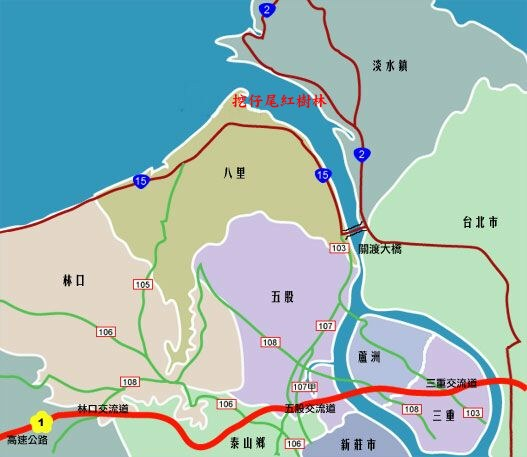
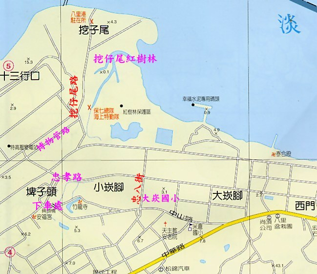

挖仔尾保護區交通導引
1.台北市方向過來在到關渡入橋時，循往八里的指示上橋，過橋後右轉接上台十五號省道，經聖心中學，約三公里先抵渡船頭站，再前行一公里經加油站時右轉舊馬路(左邊是外還道路)方向進前行約800公尺，由往挖仔尾指示牌處右轉(中山路一段268巷)，經過住宅區後左轉(忠孝路)前行到道路底右轉(博物館路)就會見到挖仔尾自然保護區的標示，接上往挖仔尾瀉湖的道路(挖仔尾街)。或在忠山路一段(大崁國小轉忠八路)再左轉忠孝路到道路底右轉(博物館路)就會見到挖仔尾自然保護區的標示。在入口處即是第一觀察點的觀察亭。 |
|  |
|
2.公車 |
|
3.搭捷運：在關渡捷運站下車在捷廣場搭八里到關渡公車在挖仔尾下車。在竹圍捷運站下車可搭八里鄉免費巴士(每小時一班)在挖仔尾下車。 |
|  |